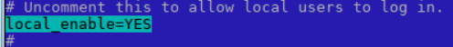
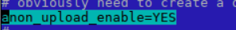
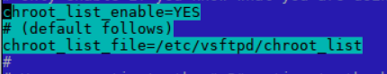
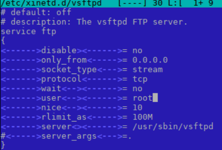
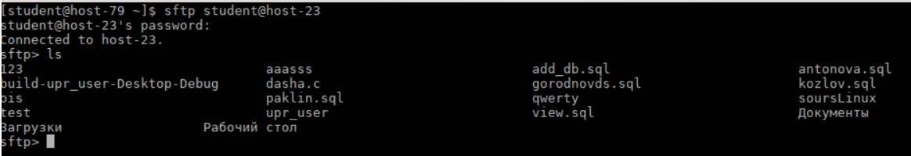

Подключение к FTP и NFC серверам
FTP
В файле /etc/vsftpd.conf необходимо раскомментировать следующие строки:



Просматриваем файл /etc/xinetd.d/vsftpd. Вносим нужные изменения:

Переходим на другой ПК и делаем следующее:
